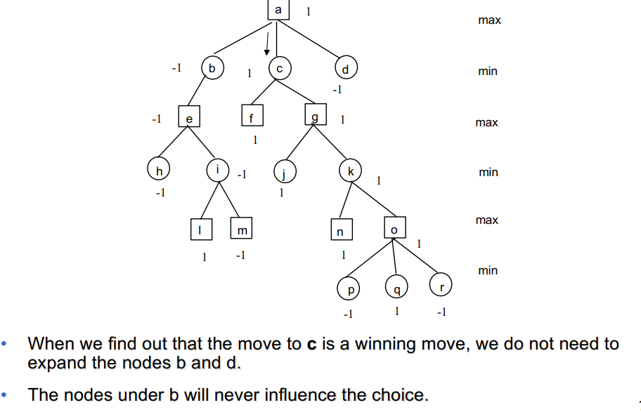

Min-Maxing
Min-maxing in an algorithm that tries to find a solution for Games problems. We assume a two player game where both player have the same knowledge about the current state of the game (not always true e.g. card games). We also assume that the objectives of the players are complementary (win and lose). The development of a game is interpreted as a tree, the players (min, max) are assumed to perform the best possible moves to win (max) avoid the other player wins (min). Le leaves are labeled as 1 (win state) or -1 (lose state)
pseudo code
def MinMax(n, current_player):
cs = n.childs()
next_player = "min" if current_player == "max" else "max"
values = {}
if len(cs) == 0:
if n.isWinning:
return 1
if n.isLosing:
return -1
return 0
for c in cs:
values[c] = MinMax(c, nex_player)
if current_player == "max":
return getMaxValueChild(values)
return getMinValueChild(values)
This code is exponential in time and space
This algorithm:
- Complete: if the tree is finite
- Optimal: against a perfect opponent
For complex games like Chess or GO the high complexity will be a problem, so we need to prune the tree. Solution: (Shannon, 1949) look forward a few levels then use an evaluating function to estimate the quality of a certain node and use it as its label.
How we decide to stop the expansion and evaluate a node?
With a perfect evaluation function this is not a problem since we just expand the root and then decide the move using the evaluation function on each child. With a non-perfect evalution function we can:
- always expand to a certain depth p (this could be a problem for very complicated moves that would need a better expansion)
- do a secondary search focused on the best move choice
Alpha-beta cuts
Another solution is to reduce the search space by avoiding expanding impossible moves  How much we are saving? The number of not-expanded nodes depends on their order. In an avarage case we reduce the number of expanded nodes from